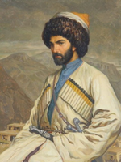
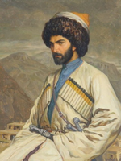
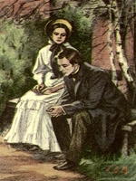
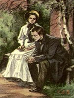
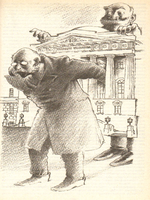
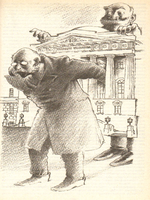

КНИГИ
 =======
>>>>>>> d96d52ea62dadf9f14745d440624860a14cf24a3
=======
>>>>>>> d96d52ea62dadf9f14745d440624860a14cf24a3
Гюстав Флобер,
"Мадам Бовари"
Гюстав Флобер вошел в мировую литературу как создатель объективного романа, когда автор остается бесстрастным наблюдателем и не навязывает читателю своих оценок. «Госпожа Бовари» - блестящее этому подтверждение. Роман, плод шестилетнего труда писателя, стал поистине энциклопедией французской провинциальной жизни XIX века. Жена лекаря, Эмма Бовари, мечтает о светской жизни, и встреча с владельцем поместья Рудольфом Буланже, известным покорителем сердец, дает ей такую надежду. она влюблена, готова ради любви на все, но исход этой страсти непредсказуем...
 =======

>>>>>>> d96d52ea62dadf9f14745d440624860a14cf24a3
=======

>>>>>>> d96d52ea62dadf9f14745d440624860a14cf24a3
Лев Толстой,
"Хаджи-Мурат"
Книга посвящена событиям Кавказской войны середины XIX века.
Главный герой повести — реальное историческое лицо.
«Хаджи-Мурат» — история аварского полевого командира, который во время Кавказской войны переходит на сторону русских. С их помощью он рассчитывает вызволить свою семью, захваченную имамом Шамилем , но вскоре сам становится пленником имперской администрации, решается на побег и гибнет в перестрелке.
«Хаджи-Мурат» — одно из последних произведений Толстого, итоговое высказывание писателя о личной свободе и о том, что её подавляет. Это безжалостная характеристика российской колониальной политики, которая опирается на задокументированные факты. А ещё — триумф художественного метода, позволяющего автору с одинаковой глубиной описывать боевые столкновения и светские приёмы, солдат и вождей, русских и горцев, жизнь и смерть.
 =======

>>>>>>> d96d52ea62dadf9f14745d440624860a14cf24a3
=======

>>>>>>> d96d52ea62dadf9f14745d440624860a14cf24a3
Иван Тургенев,
"Отцы и дети"
Роман И. С. Тургенева, написанный в 1860—1861 гг. и опубликованный в 1862 году. В обстановке «великих реформ» книга стала сенсацией и привлекла к себе всеобщее внимание, а образ главного героя Евгения Базарова был воспринят как воплощение нового, пореформенного поколения, став примером для подражания молодёжи 1860-х гг. В романе И.С. Тургенева «Отцы и дети» отразилась идеологическая борьба двух поколений, являвшаяся одной из главных особенностей общественной жизни 60-х годов XIX века. Роман приобрел непреходящие общечеловеческий интерес и значение.
 =======

>>>>>>> d96d52ea62dadf9f14745d440624860a14cf24a3
=======

>>>>>>> d96d52ea62dadf9f14745d440624860a14cf24a3
А.П. Чехов, "Скучная история"
Произведение известнейшего русского писателя А.П.Чехова «Скучная история» представляет собой повествование пожилого человека о жизни, которую ему довелось прожить. Ни в одном произведении, кроме «Скучной истории», Чехов не задавался специальной целью — рассказать о том, что творится в душе старого человека перед лицом надвигающейся смерти. Вся повесть представляет собой исповедь героя о своих переживаниях. Ученый-медик с мировой известностью, Николай Степанович к концу жизни серьезно заболевает и начинает терять свою былую работоспособность. Размышляя в связи с этим о прожитых годах, он ищет оправдания всей своей деятельности и с этой целью подвергает ее строгому суду. Заново оценивает свое поведение — как ученого, главы семейства, гражданина. И приходит к выводу, что никогда не сопротивлялся пошлости и ничтожеству, которые на его глазах царили и в науке и в его собственном доме.
"Без чтения нет настоящего образования, нет и не может быть ни вкуса, ни слова, ни многосторонней шири понимания; Гёте и Шекспир равняются целому университету. Чтением человек переживает века.”
Александр Герцен
- 8.9 Гюстав Флобер, "Мадам Бовари"
- 8.7 Лев Толстой, "Хаджи-Мурат"
- 8.3 Дэн Симмонс, "Террор"
- 8.1 Иван Тургенев, "Отцы и дети"
- 8.9 А.П. Чехов, "Скучная история"
- 8.7 Стендаль, "Красное и черное"
- 8.3 Уильям Голдинг, "Повелитель мух""
- 8.1 <<<<<<< HEAD Ги де Мопассан, "Пышка"" ======= Ги де Мопассан, "Пышка"" >>>>>>> d96d52ea62dadf9f14745d440624860a14cf24a3